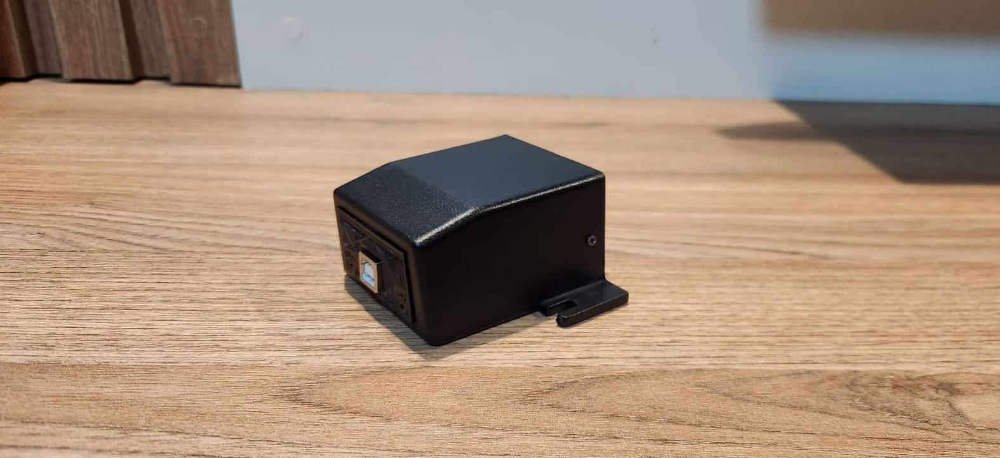
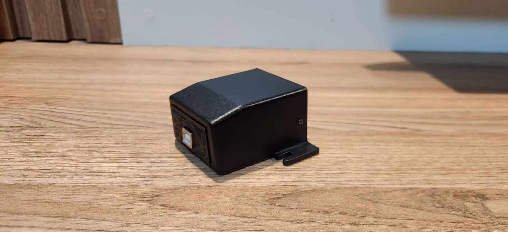

Controla luces DMX de manera eficiente utilizando la interfaz USB-DMX. Esta interfaz es optoaislada y optoacoplada.
 

La interfaz USB a DMX cuenta con un sistema de aislamiento óptico, lo que significa que el circuito que se conecta a la computadora está completamente separado eléctricamente del circuito DMX. Esto se logra utilizando optoacopladores, que permiten la transmisión de señales usando luz en lugar de corriente eléctrica directa.
Gracias a este diseño, se protege tanto a la computadora como al sistema de iluminación frente a posibles picos de tensión, cortocircuitos o fallas eléctricas en el entorno DMX. Es una característica clave en entornos profesionales donde la seguridad y la confiabilidad son fundamentales.
Además del aislamiento en la señal, esta interfaz incluye un convertidor DC-DC que proporciona una fuente de alimentación completamente aislada para el circuito DMX. Esto asegura una separación física y eléctrica total entre el lado USB y el lado DMX, eliminando cualquier posibilidad de interferencias o daños cruzados por diferencias de potencial o fallos eléctricos.
Accedé al manual digital y al driver de la interfaz.
FreeStyler DMX es un software gratuito para Windows que permite el control de luces DMX desde una computadora. Es ideal para eventos, teatros y shows en vivo, ya que ofrece una interfaz amigable y muchas funciones profesionales.
Con FreeStyler podés crear escenas, secuencias, efectos automáticos y controlar múltiples dispositivos de iluminación como cabezales móviles, PARs LED, strobes y más. La interfaz USB-DMX es 100% compatible con este programa, facilitando una conexión directa y estable.
Además, es posible integrar FreeStyler con consolas MIDI o dispositivos móviles mediante apps de control remoto, brindando flexibilidad total en el manejo del show.
Link de descarga: https://www.freestylerdmx.be/

🔹 Ya sos programador de luces? Mirá como armar un show completo!.
¿Tenés dudas o querés hacer un pedido?
Envíos a todo el país